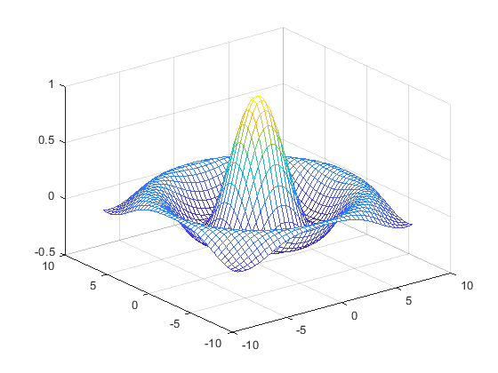

Matlab示例#
format loose
for i=1:2
i+1
end
ans = 2
ans = 3
format compact
for i=1:2
i+1
end
ans = 2
ans = 3
help sin
sin - 参数的正弦，以弧度为单位
此 MATLAB 函数 返回 X 的元素的正弦。sin 函数按元素处理数组。该函数同时接受实数和复数
输入。 对于 X 的实数值，sin(X) 返回区间 [-1, 1] 内的实数值。 对于 X 的复数
值，sin(X) 返回复数值。
语法
Y = sin(X)
输入参数
X - 输入角（以弧度为单位）
标量 | 向量 | 矩阵 | 多维数组 | 表 | 时间表
输出参数
Y - 输入角正弦
标量 | 向量 | 矩阵 | 多维数组 | 表 | 时间表
示例
openExample('matlab/PlotSineFunctionExample')
openExample('matlab/SineOfVectorOfComplexAnglesExample')
另请参阅 sind, asin, asind, sinh, sinpi
已在 R2006a 之前的 MATLAB 中引入
sin 的文档
doc sin
sin 的其他用法
codistributed/sin fixedpoint/sin sym/sin tabular/sin
dlarray/sin gpuArray/sin symbolic/sin
?sin
ans =
0x0 Class 数组 - 属性:
Name
Description
DetailedDescription
Hidden
Sealed
Abstract
Enumeration
ConstructOnLoad
HandleCompatible
InferiorClasses
Namespace
Aliases
RestrictsSubclassing
PropertyList
MethodList
EventList
EnumerationMemberList
SuperclassList
doc sin
tx = linspace (-8, 8, 41);
ty = tx;
[xx, yy] = meshgrid (tx, ty);
r = sqrt (xx .^ 2 + yy .^ 2) + eps;
tz = sin (r) ./ r;
%plot inline
mesh(tx, ty, tz);

%plot native
mesh(tx, ty, tz);
close all
?%plot
该语句不完整。
f=@(x) x^3+x-1;
fzero(f,[0 1],optimset('Display','iter'))
Func-count x f(x) Procedure
2 1 1 initial
3 0.5 -0.375 bisection
4 0.636364 -0.105935 interpolation
5 0.68491 0.00620153 interpolation
6 0.682225 -0.000246683 interpolation
7 0.682328 -5.43508e-07 interpolation
8 0.682328 1.50102e-13 interpolation
9 0.682328 0 interpolation
在区间 [0, 1] 中发现零
ans = 0.6823
function p = multi_line_func(a,b)
a = a+1;
b = b+1;
p = a+b;
end
%%file multi_line_func.m
function p = multi_line_func(a,b)
% in-file comments can be added like this
a = a+1;
b = b+1;
p = a+b;
end
multi_line_func(1,1)
函数或变量 'multi_line_func' 无法识别。
\(e^{i\pi} + 1 = 0\)
\[e^x=\sum_{i=0}^\infty \frac{1}{i!}x^i\]